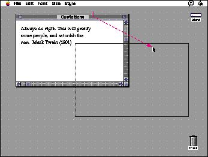

Moving a WindowThe user moves a window by dragging its title bar. As the user drags, a dotted outline of the window moves with the pointer until the user releases the mouse button. At the release of the button, the full window and its contents appear at the new location. Moving a window doesn't affect the appearance of the document within the window. Figure 5-24 shows how a moving window looks to users. The act of moving an inactive window makes it active. If a user presses the Command key while dragging a window, the window does not become active. The window moves in the same plane (doesn't change stacking order if there are multiple windows within the same application) and remains inactive. Your application should never allow users to move a window to a position from which they cannot reposition it. For example, don't allow users to move windows completely off the screen. |